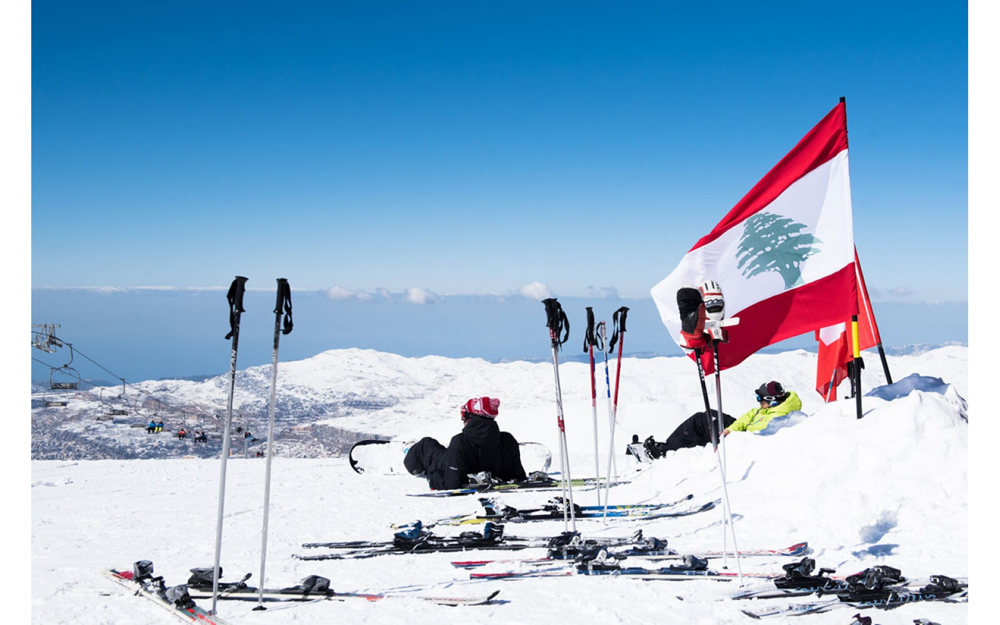
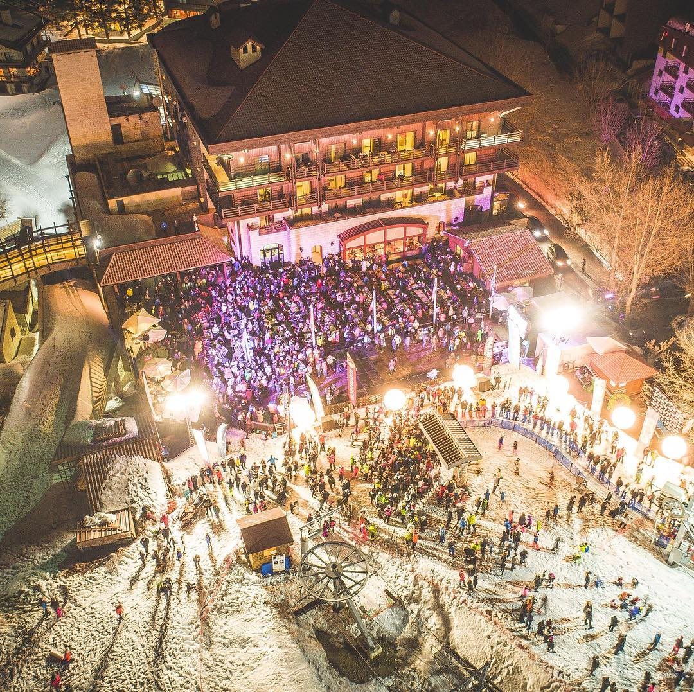
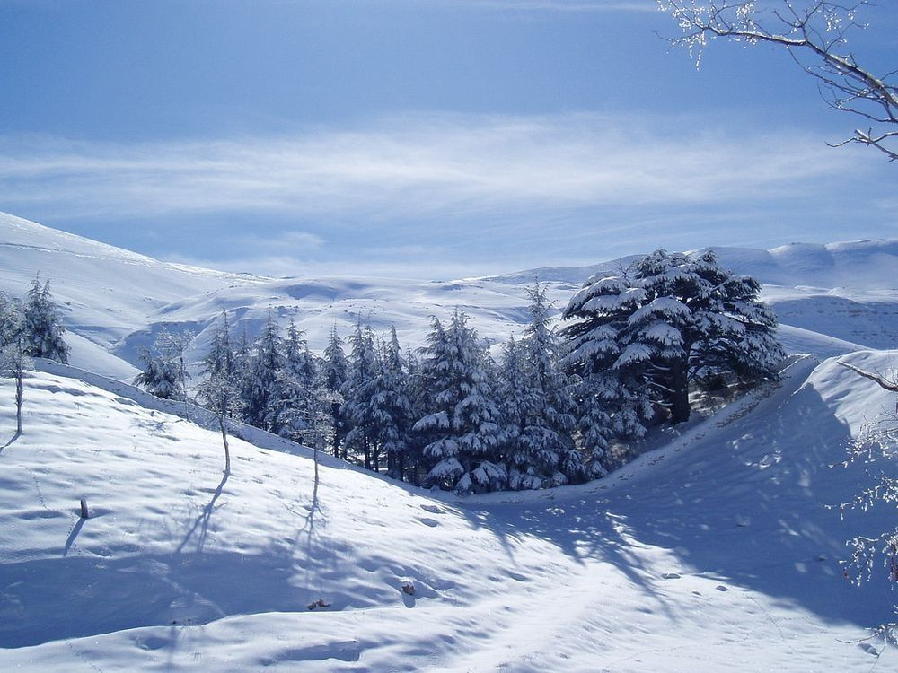
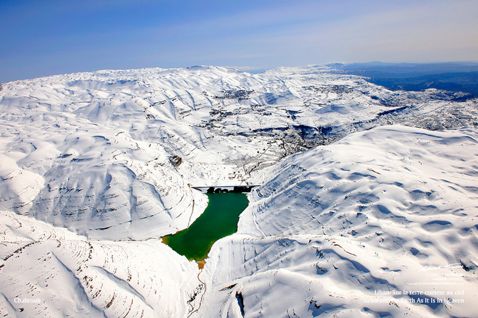
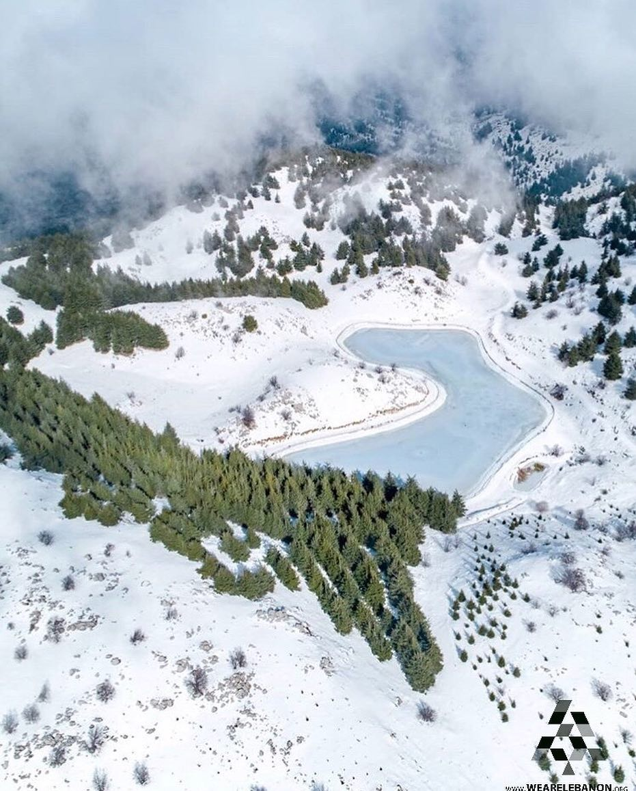
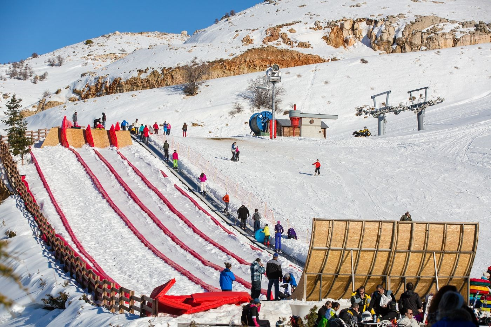
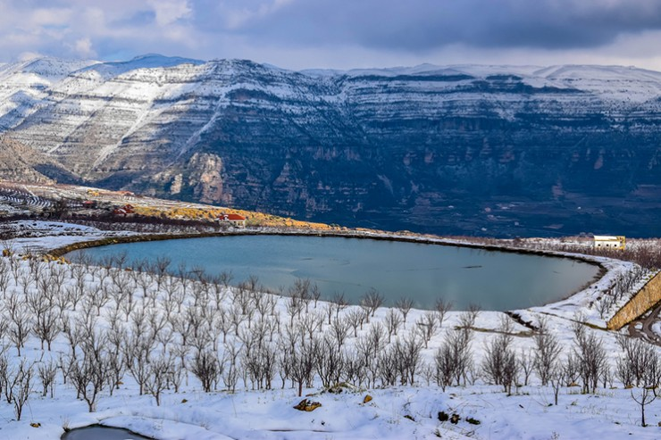
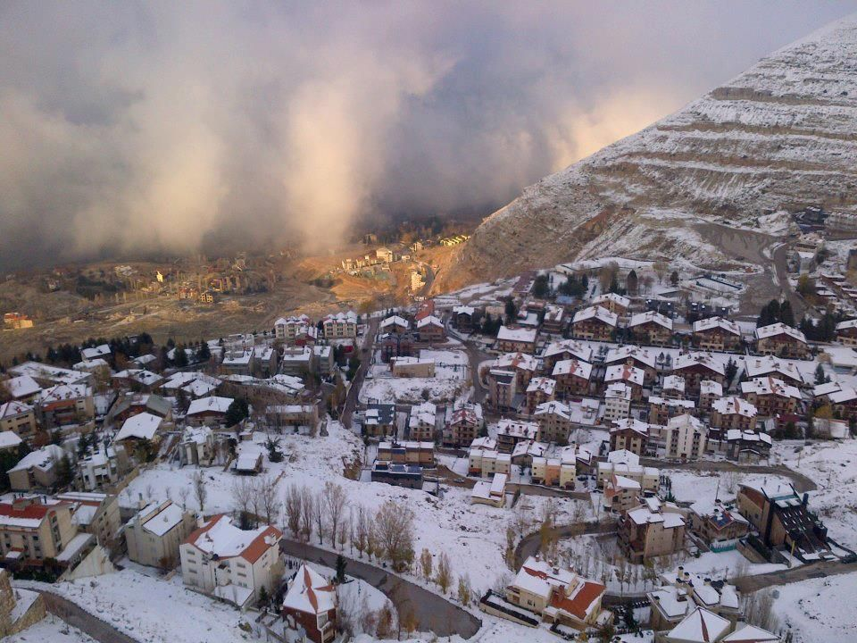

Skiing in Lebanon: Where Winter Dreams Come True! Enjoy the excitement of skiing in Lebanon’s stunning mountains. With well-equipped resorts, scenic views, and slopes for all skill levels, Lebanon is a hidden gem for winter sports lovers.



Lebanon’s Top Ski Destinations

Mzaar Kfardebian
Lebanon's largest ski area, offering over 80 kilometers of trails for all levels, along with high-end hotels, restaurants, and nightlife options.
FIND OUT MORE

The Cedars
Famous for its historical cedar trees and high-altitude slopes, the Cedars offers snowboarding, skiing, and stunning winter landscapes.
FIND OUT MORE

Zaarour Club
Located just a short drive from Beirut, Zaarour provides well-groomed slopes, family activities, and breathtaking views of the valleys below.
FIND OUT MORE

Laqlouq
Ideal for families, Laqlouq offers beginner-friendly trails and scenic areas perfect for snowshoeing and Nordic skiing.
FIND OUT MORE

Faraya
A favorite for adventurers, Faraya combines steep slopes with cozy chalets, allowing visitors to enjoy both skiing and a warm retreat.
FIND OUT MORE